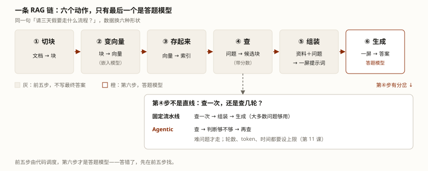

你在知识库问答的输入框里敲一句：「请三天假要走什么流程？」几秒后答案出来，还带出处。
中间发生了什么？多数人会说「模型查了资料再回答」。这句话把六个动作压成了一个，出问题时也就找不到该怪谁。
拆开是六步：切块、变向量、存起来、查、组装、生成。一条固定流水线里，前五步由代码按顺序调度，只有第六步负责写最终答案。
学完这课，你能把六步讲出来，说清每步手上是什么数据、最容易怎么坏、该去第几课看修法；答错时，也知道先查哪一步。
一份文档进，一句答案出，中间换了六次手：切块 → 变向量 → 存起来 → 查 → 组装 → 生成。
固定流水线里，前五步不写最终答案，第六步才是答题模型。RAG 出问题，先在前五步找。
上一课说，RAG 就是先翻书再回答。可「翻书」不是一只手在翻。文档要先进库，问题要先去撞它，撞出来的几段要摆好，最后才轮到模型开口。每走一步，数据就换一种形状。
还是那份员工手册，还是那句「请三天假要走什么流程」。把这句话走完一遍，形状是这样的：

说前五步是「普通程序」，意思是它们由代码按顺序调度，不负责写最终答案；出了问题时，中间结果大多能打印出来看。第②步会调用一个嵌入模型，它只把文字压成向量。建库时还可能另用模型帮忙：给每块补一句上下文摘要、预生成几个能被问到的问题（RAGFlow 的 Extractor 就有 Summary、Auto-question）。这些是给检索用的加工，产出的是块上的附加文字，不是最终答案。
这条分界线决定了出事时你该往哪看：模型的脾气第 1 课讲过；这一课要给的，是前五步的地图。第④步的顺序在 agentic 里会变，第 3 节单说。
沿着同一个问题走。每一步只问三件事：手上拿到什么、把它变成什么、坏起来是什么样。修法都另有专课，这里只留门牌。
手上是一份文档，可能是一页 PDF，也可能是一整本手册。输出是一串块（chunk）。块是 RAG 里最小的检索单位：后面查的是块，塞给模型的也是块，不是整份文档。
为什么要切？一份文档里通常只有一两句话跟当前问题有关。整份塞进去，重点会被无关内容淹掉；切成块，才有机会只把相关的那几块递给模型。
坏法有两种，名字先记住：切太大，答案被一堆无关内容埋住；切得不是地方，一句话被劈成两半，剩下的半句谁也看不懂。脚本第 1 步会当场切给你看：段 2 开头是「年者 15 天」，前半截留在了上一段。修法在第 4 课。
工具里长这样：RAGFlow 的 Dataset Configuration 里，这一步对应 parsing method（按什么材料解析）和 recommended chunk size（切多大，默认 512 token）。token 是模型处理文字的单位，中文一个字大致一个 token；改完要重新解析才生效。
手上是一串块，输出是同样多的一串向量：每块压成一根固定长度的数字。长度由嵌入模型定，各家不同，这就是「维度」；脚本里的玩具向量是 123 维。第 1 课分过两种嵌入，这里用的是文本嵌入：压的是一整段文字，不是单个 token；干这件事的是另一个小模型，不是最后答题的那个。
它只干一件事：让意思相近的块，压出来的向量挨得近。至于「挨得近」怎么算，是三把尺子的事，第 5 课。
坏法：换一个嵌入模型，旧的向量就全作废了，必须整库重算；同名不同物、生僻说法，它也可能压错位置，把「像」当成「对」。第 5 课和第 6 课分别修这两类。
工具里长这样：同一个 Dataset Configuration 页面选 Embedding model；换模型有兼容性抽查，但保存后不会自动重嵌旧块。实际做法仍是新建库、全量重算。
手上是一堆向量和它们的原文，输出是一个能快速比相似度的索引。索引里通常存三样：向量、原文，以及来源、页码这类元数据。
它听着高级，其实就是「一堆向量 ＋ 一个查找方法」。它只管存得下、查得快，不管像不像。像不像由第②步的模型和第④步的尺子决定。
坏法：以为存进去就完事。你用的系统如果只做了向量索引、没做全文索引，第 6 课那条关键词一路就没有原料，因为 Full-text 索引里存的是原文的词。或者换了嵌入模型只重算新块，旧块还留在库里，新旧向量对不上——这笔账在第②步，修法在第 5 课。
工具里长这样：Dataset Configuration 的 Indexer 里，Search method 会列出 Embedding 和 Full-text 两路；当前面板是展示标签，不是勾选框。Full-text 按原文的词做索引，给第 6 课的关键词一路用。
手上是一句问题和一个索引，输出是一张排名表：候选块、每块的相似度、来源。模型看不到这张表，它后面只会看到被挑中的那几块。这一步也叫召回：从库里把可能有用的段先捞回来。
问题先用第②步同一个嵌入模型压成一根向量，再跟索引里的向量比。比法有三把尺子（第 5 课）。只靠语义会漏掉编号和生僻词，所以常再开一路关键词检索（第 6 课）。有的系统还会把候选段逐段跟问题放一起重新打分，叫重排，也在第 6 课。问题本身还常常要先加工：补全省略的说法、把一句拆成几问、换用文档里的词、先写一段假答案再查，第 7 课。
坏法：取太少会漏，取太多会把重点淹掉；问法和文档用词对不上；编号差一位，语义检索可能就分不清。第 6、7、9 课都在修这一步。
工具里长这样：RAGFlow 的 Retrieval testing 面板就是给这一步开的——不开对话，直接看一句 query 召回哪些块、相似度多少。
这一步还有一个分岔，下一节单独说。
手上是排名表和原问题，输出是一屏提示词：指令、资料、问题、约束，四样拼在一起。模型看到的不是资料库，也不是排名表，只是这一屏。
检索决定「有哪些资料」，组装决定「模型看到哪一屏」。放几段、怎么排、怎么标、怎么约束、没有答案怎么办，是这一屏的五个决定，第 8 课逐个拆。
坏法：最该用的那段放在中间；段数太多，重点被稀释；提示词没写「只依据资料」；没有拒答出口。第 8 课引的 Liu 等人实验量过：同一段资料，放开头或结尾比放中间更容易被用上；在 20 段以上的设置里，放中间的成绩甚至低于完全不给资料。
工具里长这样：RAGFlow 的 Chat 配置里，Top N 是最后进提示词的段数，跟第④步的 k 不是同一个数：k 决定召回多少候选，Top N 决定最后留几段。Show citations 管出处，Empty Response 管「没有资料时说什么」。
手上是一屏提示词，输出是答案。六步里只有这一步写最终答案，而且用的就是你平时用的那个答题模型：没换、没训练、参数没动。
它照着这一屏往下接。资料错了、顺序错了、约束没写，它照样能答得很顺——这是第 1 课说的「接得像」，也是为什么前五步值得一遍遍查。
坏法：资料里没有却编；资料在却没用上；答错了先想着换模型。前两种的修法在第 8、9 课，第三种正是这一课要拦住的反应。
工具里长这样：第⑥步的选择落在 Chat 配置里选的那个答题模型上；换模型是这一步的事，跟前五步无关。
前五步听着像一条直线：切完压，压完存，存完查，查完拼。前四步确实是直线，第④步不是。
固定流水线里，「查」只发生一次，就在生成之前。查完往下走，没有任何一步回头问「查到的够不够」。这套设计在多数问题上够用，三类问题不配合。第一类是根本不用查的：问候、把上一轮回答改写一下。第二类是一次查不全的：一句话横跨两条制度。第三类是查回来没用的：全是噪音，或者资料库里压根没有。
Agentic RAG 改的就是这个假设：把检索从流水线里的固定一步，变成模型手里的一个工具。模型在循环里做四个决定——查不查、查什么、够不够、再查不查；每多一轮，就多一次检索、多一次模型调用、多一段上下文。所以它必须跟预算和停止条件一起上：最多几轮、多少 token、多长时间。比如最多 3 轮、单次最多 30 秒，到顶就停，回答里注明资料不足。
这张地图上，第④步画成了一个岔口：一条是固定流水线，一条是 agent 循环。多数系统先走第一条；走到头仍然不够，再考虑第二条。整条岔路在第 11 课。
RAG 的错，症状都落在最后那句回答上，病灶却可能在前面的任何一步。把所有错都归给模型，等于每次坏了都先换模型，修没修好全看运气。
先分两类：该来的没来，答案没进提示词，问题在①～④；来了没用上，答案在提示词里，模型却没用，问题在⑤～⑥。分开它们只要一个动作：把模型看到的那一屏打印出来，看答案在不在里面。这个动作第 9 课会反复用。
自己拼提示词的系统，直接打印那一屏；用现成工具时，拼好的那一屏不一定给你看，先看它返回的引用和召回结果，第 9 课讲怎么倒推。
下面是这张地图最常见的几种用法。它只指方向，具体怎么修是后面各课的事。
| 你看到的症状 | 先查哪一步 | 修法在哪 |
|---|---|---|
| 切块结果里就找不到答案 | ① 切块 | 第 4 课：在数据集的文件页看块，再洗文档、调大小、加重叠 |
| 按编号或原词查，几乎查不到 | ③ 索引 | 第 6 课：确认全文索引存在 |
| 切块结果里有，检索却没召回 | ④ 查 | 第 9 课：先排除②③，再调 top-k |
| 换个说法就查不到，编号却查得准 | ② 变向量 / ④ 查 | 第 5、6 课：换嵌入、开关键词一路 |
| 编号、金额、日期差一位 | ④ 查 | 第 6 课：加关键词检索与重排 |
| 答案就在提示词里，模型还是答偏 | ⑤ 组装 | 第 8 课：顺序、段数、标签、约束 |
| 答得顺，但内容是编的 | ⑥ 生成（先回查⑤） | 第 1、8、9 课：拒答、引用、诊断 |
表里同一症状可能横跨两三步。排查顺序是：先看块，再看索引有没有那一路，再看嵌入模型换没换，最后才调 k。越往后改，代价越大。
「模型不听话」先别急着算⑥：如果那一屏没写「只依据资料」「没有就说没有」，先按⑤修；约束写死了还编，才轮到⑥。
为什么说「先在前五步找」不是口号？Anthropic 量过一组数。在他们那批文档上，统计取前 20 段时「没取到正确那段」的比例：
普通 RAG 5.7% 失败
＋ 给每段补上一句「这段在讲什么」 3.7%
＋ 再叠上关键词检索 2.9%
＋ 再加一道重排序 1.9%四行里没有一步是换答题模型。给每块补一句「这段在讲什么」，是建库时另用模型写的，服务于检索；加一路关键词检索、再加一道重排序，也都发生在建库和检索这两步。失败率从 5.7% 降到 1.9%，技术性全在前五步。
代价也有：建库时每块多一次模型调用，检索时多一路关键词和一道重排，都会涨时间和 token。第 6 课算这笔账。
所以这张地图的用处不是背六步，是出事时知道该翻哪一课。
脚本在 exercises/rag/0002-rag-pipeline.py。它不调模型，只把六步的数据形状打印出来：同一份 143 字的迷你手册、同一句问题，从切块走到一屏提示词。
python exercises/rag/0002-rag-pipeline.pyWindows 终端直接跑可能因 ⚠ 这类字符报 UnicodeEncodeError；先执行 chcp 65001 再跑。下面贴 [1]～[7] 七节，只省略 [0] 起点。
[1] 第 1 步 · 切块 chunking：按每 32 字切成 5 段
段 1（32 字）：第一章 年假。入职满一年者每年 5 天，满三年者 10 天，满五
段 2（32 字）：年者 15 天。请假三天以内（含三天），向直属主管口头报备即可。
段 3（32 字）：请假三天以上，需在系统里提交申请单，附上证明材料。第二章 报销。
段 4（32 字）：每月 25 日前提交发票，财务次月 15 日打款。加班满 4 小
段 5（15 字）：时可调休半天，调休需当月用完。
⚠ 看段 2 开头的「年者 15 天。」——半个词被切在了上一段。
⚠ 看段 3 结尾的「第二章 报销。」——两件不相干的事被切进了同一段。
切块有两个坑：
切太大 → 相关的一句被一堆无关内容埋住，相似度被稀释
切得不是地方 → 上下文被切碎，剩下的半句谁也看不懂
[2] 第 2 步 · 变向量 embedding：每段压成一根 123 维的向量
这根向量是【每个「二字组合」出现几次】的一串数：
段 2 里「三天」出现 2 次
段 3 里「请假」出现 1 次，「证明」出现 1 次
⚠ 用的是【另一个模型】（文本嵌入模型），不是 LLM 底层第 1 课那个词嵌入。
词嵌入：一个 token 一根，喂给模型当输入。
文本嵌入：整段一根，只用来排序，不喂给模型。
[3] 第 3 步 · 存起来：向量库里现在有 5 条，等着被查
（这个「库」就是一堆向量 + 一个能快速比相似度的索引，没有魔法。）
[4] 第 4 步 · 查 retrieval：问题也变向量，逐条比相似度
相似度 = 2 段 2：年者 15 天。请假三天以内（含三天），向直属主管口头报备即可。
相似度 = 1 段 3：请假三天以上，需在系统里提交申请单，附上证明材料。第二章 报销。
相似度 = 0 段 1：第一章 年假。入职满一年者每年 5 天，满三年者 10 天，满五
相似度 = 0 段 4：每月 25 日前提交发票，财务次月 15 日打款。加班满 4 小
相似度 = 0 段 5：时可调休半天，调休需当月用完。
按分排序，取前 2 段（top-k，k = 2）
⚠ 取太少会漏；取太多会把重点淹掉。k 是 RAG 里第一个要调的数。
[5] 第 5 步 · 组装（塞进提示词）：把挑出来的 2 段排在问题前面
┌──────────────────────────────────────
│【资料 1】年者 15 天。请假三天以内（含三天），向直属主管口头报备即可。
│【资料 2】请假三天以上，需在系统里提交申请单，附上证明材料。第二章 报销。
│【问题】请三天假要走什么流程？
└──────────────────────────────────────
⚠ 这一步也有坑：【检索到 ≠ 用上】。
塞进去不等于模型会用——排在中间的内容最不容易被用上。
[6] 第 6 步 · 生成：模型读完提示词，吐出答案
答：三天含在「三天以内」里，向直属主管口头报备即可。
[7] 记住一件事
六步里，只有第 6 步是答题模型。前五步由代码按固定顺序调度。
RAG 的「技术性」全在前五步——切块、变向量、存、查、组装。
所以 RAG 出问题时，先别怪模型：多半是前五步里哪一步没做好。三处要看懂：
Q1 把一整段文字压成一根向量，是六步里的哪一步？
Q2 一条 RAG 链里，真正用到答题模型的是哪一步？
Q3 切块切得不是地方，会出什么问题？
Q4 答案已经检索到、也塞进提示词了，为什么还会答错？
Q5 什么情况下，第④步要从「查一次」换成「查几轮」？
Q6 RAGFlow 的 Retrieval testing 面板，对应六步里的哪一步？
回上一课：RAG · 第 1 课 · 为什么得「先查资料再回答」
顺着往下：RAG · 第 3 课 · 什么时候不该上 RAG
想深挖：第 4 课 · 建库：清洗与切块（第①步）· 第 11 课 · Agentic RAG（第④步的岔路）
术语表：切块 · 文本嵌入 · 稀疏 / 稠密检索